Chapter 26: Seed Plants¶
Introduction¶
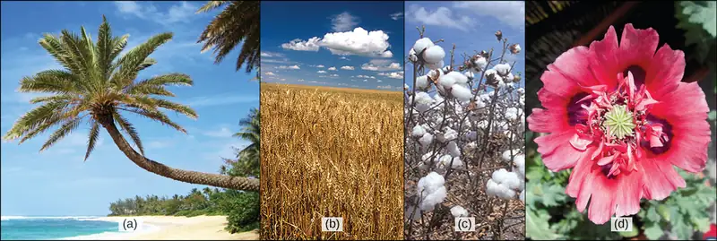
The lush palms on tropical shorelines do not depend on water for the dispersal of their pollen, fertilization, or the survival of the zygote—unlike mosses, liverworts, and ferns living within the same terrain. These palms are seed plants, which have broken free from the need to rely on water for their reproductive needs. The seed plants play an integral role in all aspects of life on the planet, shaping the physical terrain, influencing the climate, and maintaining life as we know it. For millennia, human societies have depended on seed plants for nutrition and medicinal compounds. Somewhat more recently, seed plants have served as a source of manufactured products such as timber and paper, dyes, and textiles. As an example, multiple uses have been found for each of the plants shown above. Palms provide materials including rattans, oils, and dates. Grains like wheat are grown to feed both human and animal populations or fermented to produce alcoholic beverages. The fruit of the cotton flower is harvested as a boll, with its fibers transformed into clothing or pulp for paper. The showy opium poppy is valued both as an ornamental flower and as a source of potent opiate compounds.
26.1 Evolution of Seed Plants¶
Learning Objectives
By the end of this section, you will be able to do the following:
- Describe the two major innovations that allowed seed plants to reproduce in the absence of water
- Explain when seed plants first appeared and when gymnosperms became the dominant plant group
- Discuss the purpose of pollen grains and seeds
- Describe the significance of angiosperms bearing both flowers and fruit
The first plants to colonize land were most likely related to the ancestors of modern day mosses (bryophytes), which are thought to have appeared about 500 million years ago. They were followed by liverworts (also bryophytes) and primitive vascular plants—the pterophytes—from which modern ferns are descended. The life cycle of bryophytes and pterophytes is characterized by the alternation of generations, which is also exhibited in the gymnosperms and angiosperms. However, what sets bryophytes and pterophytes apart from gymnosperms and angiosperms is their reproductive requirement for water. The completion of the bryophyte and pterophyte life cycle requires water because the male gametophyte releases flagellated sperm, which must swim to reach and fertilize the female gamete or egg. After fertilization, the zygote undergoes cellular division and grows into a diploid sporophyte, which in turn will form sporangia or "spore vessels." In the sporangia, mother cells undergo meiosis and produce the haploid spores. Release of spores in a suitable environment will lead to germination and a new generation of gametophytes.
In seed plants, the evolutionary trend led to a dominant sporophyte generation accompanied by a corresponding reduction in the size of the gametophyte from a conspicuous structure to a microscopic cluster of cells enclosed in the tissues of the sporophyte. Whereas lower vascular plants, such as club mosses and ferns, are mostly homosporous (producing only one type of spore), all seed plants, or spermatophytes, are heterosporous, producing two types of spores: megaspores (female) and microspores (male). Megaspores develop into female gametophytes that produce eggs, and microspores mature into male gametophytes that generate sperm. Because gametophyte maturation depends on water and nutrient supply from the dominant sporophyte tissue, they are not free-living, as are the gametophytes of seedless vascular plants.
Ancestral heterosporous seedless plants, represented by modern-day plants such as the spike moss Selaginella, are seen as the evolutionary forerunners of seed plants. In the life cycle of Selaginella, both male and female sporangia develop within the same stem-like strobilus. In each male sporangium, multiple microspores are produced by meiosis. Each microspore produces a small antheridium contained within a spore case. As it develops it is released from the strobilus, and a number of flagellated sperm are produced that then leave the spore case. In the female sporangium, a single megaspore mother cell undergoes meiosis to produce four megaspores. Gametophytes develop within each megaspore, consisting of a mass of tissue that will later nourish the embryo and a few archegonia. The female gametophyte may remain within remnants of the spore wall in the megasporangium until after fertilization has occurred and the embryo begins to develop. This combination of an embryo and nutritional cells is a little different from the organization of a seed, since the nutritive endosperm in a seed is formed from a single cell rather than multiple cells.
Both seeds and pollen distinguish seed plants from seedless vascular plants. These innovative structures allowed seed plants to reduce or eliminate their dependence on water for gamete fertilization and development of the embryo, and to conquer dry land. Pollen grains are male gametophytes, which contain the sperm (gametes) of the plant. The small haploid (1n) cells are encased in a protective coat that prevents desiccation (drying out) and mechanical damage. Pollen grains can travel far from their original sporophyte, spreading the plant’s genes. Seeds offer the embryo protection, nourishment, and a mechanism to maintain dormancy for tens or even thousands of years, ensuring that germination can occur when growth conditions are optimal. Seeds therefore allow plants to disperse the next generation through both space and time. With such evolutionary advantages, seed plants have become the most successful and familiar group of plants.
Both adaptations expanded the colonization of land begun by the bryophytes and their ancestors. Fossils place the earliest distinct seed plants at about 350 million years ago. The first reliable record of gymnosperms dates their appearance to the transition of Devonian to Carboniferous period, about 319 million years ago (Figure 26.2). Gymnosperms were preceded by progymnosperms, the first naked seed plants, which arose about 380–390 million years ago. Progymnosperms were a transitional group of plants that superficially resembled conifers (cone bearers) because they produced wood from the secondary growth of the vascular tissues; however, they still reproduced like ferns, releasing spores into the environment. At least some species were heterosporous. Progymnosperms, like the extinct Archaeopteris (not to be confused with the ancient bird Archaeopteryx), dominated the forests of the late Devonian period. However, by the early (Triassic, c. 240 MYA) and middle (Jurassic, c. 205 MYA) Mesozoic era, the landscape was dominated by the true gymnosperms. Angiosperms surpassed gymnosperms by the middle of the Cretaceous (c. 100 MYA) in the late Mesozoic era, and today are the most abundant and biologically diverse plant group in most terrestrial biomes.
![The table describes eras in earth's history associated with evolution of plant groups. In the first column, earth's history is divided into four eons, the Pre Archean- Hadean, Archaean, Proterozoic, Phanerozoic. The oldest eon, the Pre Archean, spans the beginning of earth's history to about 3.8 billion years ago. The Archean eon spans 2.5 to 3.8 billion years ago, and the Proterozoic spans 540 million to 2.5 billion years ago. The second column lists the eras within each eon. The Phanerozoic eon, from 540 million years ago to present time, is sub divided into the Paleozoic, Mesozoic and Cenozoic eras. The third column lists the periods within each. The Paleozoic era, from 250 to 540 million years ago, is further divided into seven periods: the Cambrian from 500 to 540 million years ago, the Ordovician from 435 to 500 million years ago, the Silurian from 410 to 435 million years ago, the Devonian from 319 to 410 million years ago, the Carboniferous from 290 to 290 million years ago, and the Permian from 250 to 290 million years ago. The Mesozoic era, from 66 to 250 million years ago, is divided into three periods, the Triassic from 205 to 250 million years ago, the Jurassic from 138 to 205 million years ago, and the Cretaceous, from 66 to 138 million years ago. The Cenozoic era, from 66 million years ago to modern times, is divided into three eras, the Paleogene from 23 to 66 million years ago, Neogene from 2.6 to 23 million years ago, and the Quaternary from present to 2.8 million years. The last column indicates the time periods in millions of years. To the right of the table the plant groups are placed next to the time period of their evolution. The Liverworts and Mosses are at the transition from Cambrian to Ordovician time period around 500 million years ago. Lycophytes evolved during the Silurian time period around 435 million years ago. Pterophytes evolved at the end of the mid Devonian period around 450 million years ago, while Gymnosperms at the Carboniferous period around 320 million years ago. The angiosperms evolved during early Cretaceous period 140 million years ago.](img/figure-b26-01-09.webp)
Evolution of Gymnosperms¶
The fossil plant Elkinsia polymorpha, a "seed fern" from the Devonian period—about 400 million years ago—is considered the earliest seed plant known to date. Seed ferns (Figure 26.3) produced their seeds along their branches, in structures called cupules that enclosed and protected the ovule—the female gametophyte and associated tissues—which develops into a seed upon fertilization. Seed plants resembling modern tree ferns became more numerous and diverse in the coal swamps of the Carboniferous period.
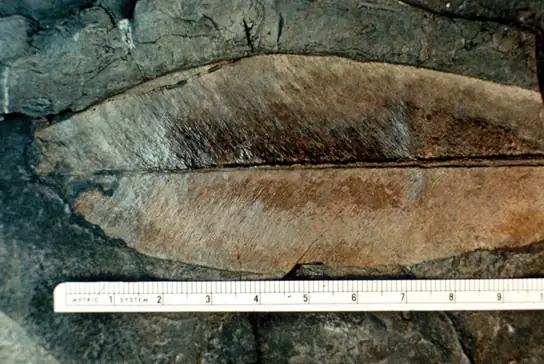
Fossil records indicate the first gymnosperms (progymnosperms) most likely originated in the Paleozoic era, during the middle Devonian period: about 390 million years ago. The following Carboniferous period was wet and dominated by giant fern trees. But the following Permian period was dry, which gave a reproductive edge to seed plants, which are better adapted to survive dry spells. The Ginkgoales, a group of gymnosperms with only one surviving species—the Ginkgo biloba—were the first gymnosperms to appear during the early Permian. Gymnosperms expanded in the Mesozoic era (about 240 million years ago), supplanting ferns in the landscape, and reaching their greatest diversity during this time. The Jurassic period was as much the age of the cycads (palm-tree-like gymnosperms) as the age of the dinosaurs. Ginkgoales and the more familiar conifers also dotted the landscape. Today, although angiosperms (flowering plants) are the major form of plant life in most biomes, gymnosperms still dominate some ecosystems, such as the taiga (boreal forests) and the alpine forests at higher mountain elevations (Figure 26.4) because of their adaptation to cold and dry growth conditions.
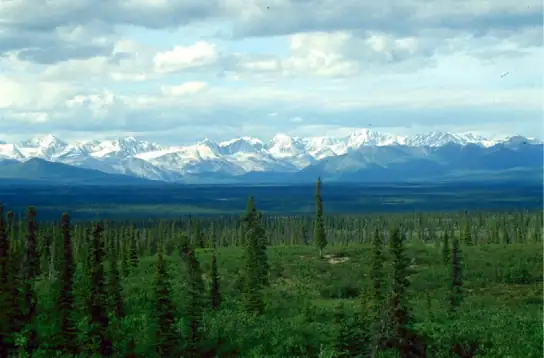
Seeds and Pollen as an Evolutionary Adaptation to Dry Land¶
Bryophyte and fern spores are haploid cells dependent on moisture for rapid development of multicellular gametophytes. In the seed plants, the female gametophyte consists of just a few cells: the egg and some supportive cells, including the endosperm-producing cell that will support the growth of the embryo. After fertilization of the egg, the diploid zygote produces an embryo that will grow into the sporophyte when the seed germinates. Storage tissue to sustain growth of the embryo and a protective coat give seeds their superior evolutionary advantage. Several layers of hardened tissue prevent desiccation, and free the embryo from the need for a constant supply of water. Furthermore, seeds remain in a state of dormancy—induced by desiccation and the hormone abscisic acid—until conditions for growth become favorable. Whether blown by the wind, floating on water, or carried away by animals, seeds are scattered in an expanding geographic range, thus avoiding competition with the parent plant.
Pollen grains (Figure 26.5) are male gametophytes containing just a few cells and are distributed by wind, water, or an animal pollinator. The whole structure is protected from desiccation and can reach the female organs without depending on water. After reaching a female gametophyte, the pollen grain grows a tube that will deliver a male nucleus to the egg cell. The sperm of modern gymnosperms and all angiosperms lack flagella, but in cycads, Ginkgo, and other primitive gymnosperms, the sperm are still motile, and use flagella to swim to the female gamete; however, they are delivered to the female gametophyte enclosed in a pollen grain. The pollen grows or is taken into a fertilization chamber, where the motile sperm are released and swim a short distance to an egg.
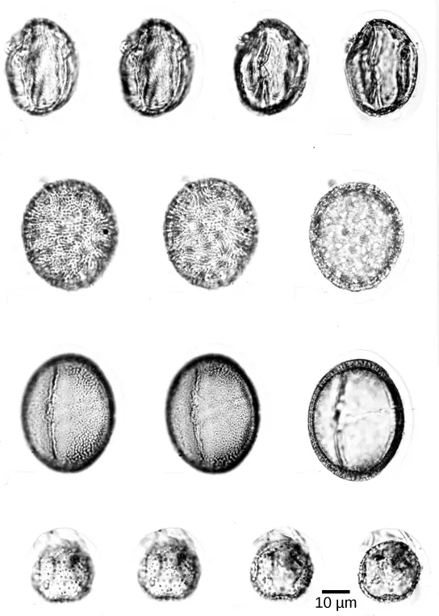
Evolution of Angiosperms¶
The roughly 200 million years between the appearance of the gymnosperms and the flowering plants gives us some appreciation for the evolutionary experimentation that ultimately produced flowers and fruit. Angiosperms (“seed in a vessel”) produce a flower containing male and/or female reproductive structures. Fossil evidence (Figure 26.6) indicates that flowering plants first appeared about 125 million years ago in the Lower Cretaceous (late in the Mesozoic era), and were rapidly diversifying by about 100 million years ago in the Middle Cretaceous. Earlier traces of angiosperms are scarce. Fossilized pollen recovered from Jurassic geological material has been attributed to angiosperms. A few early Cretaceous rocks show clear imprints of leaves resembling angiosperm leaves. By the mid-Cretaceous, a staggering number of diverse flowering plants crowd the fossil record. The same geological period is also marked by the appearance of many modern groups of insects, suggesting that pollinating insects played a key role in the evolution of flowering plants.
New data in comparative genomics and paleobotany (the study of ancient plants) have shed some light on the evolution of angiosperms. Although the angiosperms appeared after the gymnosperms, they are probably not derived from gymnosperm ancestors. Instead, the angiosperms form a sister clade (a species and its descendents) that developed in parallel with the gymnosperms. The two innovative structures of flowers and fruit represent an improved reproductive strategy that served to protect the embryo, while increasing genetic variability and range. There is no current consensus on the origin of the angiosperms. Paleobotanists debate whether angiosperms evolved from small woody bushes, or were related to the ancestors of tropical grasses. Both views draw support from cladistics, and the so-called woody magnoliid hypothesis—which proposes that the early ancestors of angiosperms were shrubs like modern magnolia—also offers molecular biological evidence.
The most primitive living angiosperm is considered to be Amborella trichopoda, a small plant native to the rainforest of New Caledonia, an island in the South Pacific. Analysis of the genome of A. trichopoda has shown that it is related to all existing flowering plants and belongs to the oldest confirmed branch of the angiosperm family tree. The nuclear genome shows evidence of an ancient whole-genome duplication. The mitochondrial genome is large and multichromosomal, containing elements from the mitochondrial genomes of several other species, including algae and a moss. A few other angiosperm groups, called basal angiosperms, are viewed as having ancestral traits because they branched off early from the phylogenetic tree. Most modern angiosperms are classified as either monocots or eudicots, based on the structure of their leaves and embryos. Basal angiosperms, such as water lilies, are considered more ancestral in nature because they share morphological traits with both monocots and eudicots.
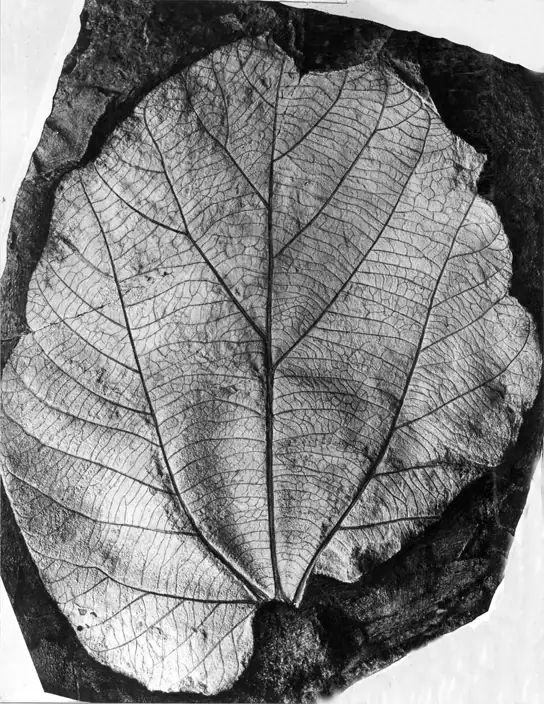
Flowers and Fruits as an Evolutionary Adaptation¶
Angiosperms produce their gametes in separate organs, which are usually housed in a flower. Both fertilization and embryo development take place inside an anatomical structure that provides a stable system of sexual reproduction largely sheltered from environmental fluctuations. With about 300,000 species, flowering plants are the most diverse phylum on Earth after insects, which number about 1,200,000 species. Flowers come in a bewildering array of sizes, shapes, colors, smells, and arrangements. Most flowers have a mutualistic pollinator, with the distinctive features of flowers reflecting the nature of the pollination agent. The relationship between pollinator and flower characteristics is one of the great examples of coevolution.
Following fertilization of the egg, the ovule grows into a seed. The surrounding tissues of the ovary thicken, developing into a fruit that will protect the seed and often ensure its dispersal over a wide geographic range. Not all fruits develop completely from an ovary; such “false fruits" or pseudocarps, develop from tissues adjacent to the ovary. Like flowers, fruit can vary tremendously in appearance, size, smell, and taste. Tomatoes, green peppers, corn, and avocados are all examples of fruits. Along with pollen and seeds, fruits also act as agents of dispersal. Some may be carried away by the wind. Many attract animals that will eat the fruit and pass the seeds through their digestive systems, then deposit the seeds in another location. Cockleburs are covered with stiff, hooked spines that can hook into fur (or clothing) and hitch a ride on an animal for long distances. The cockleburs that clung to the velvet trousers of an enterprising Swiss hiker, George de Mestral, inspired his invention of the loop and hook fastener he named Velcro.
Evolution Connection: Building Phylogenetic Trees with Analysis of DNA Sequence Alignments
All living organisms display patterns of relationships derived from their evolutionary history. Phylogeny is the science that describes the relative connections between organisms, in terms of ancestral and descendant species. Phylogenetic trees, such as the plant evolutionary history shown in Figure 26.7, are tree-like branching diagrams that depict these relationships. Species are found at the tips of the branches. Each branching point, called a node, is the point at which a single taxonomic group (taxon), such as a species, separates into two or more species.
![The image depicts a branching diagram (a tree-like structure) where the branches spread horizontally from a main ancestor on the left. On the right, organism names are labeled. The cascading branching starts with a single stem at the upper left corner labeled ‘Ancestral green algae’. This has a branching point giving rise to three horizontal branches. The top two branches extend all the way to the right and are labeled ‘Coleochaetes (green algae)’ and ‘Charophytes (green algae) from top to bottom. The third branch is a short branch labeled ‘Embryophytes’ on the left. It branches into two new branches. The top branch extends all the way to the right and is labeled Marchantiophyta (liverworts)’. The bottom branch divides into two additional branches, the top labeled Anthocerotophyta (hornworts)’. The bottom branch splits into two branches, the top labeled at the right ‘Bryopsida (mosses)’. The liverworts, hornworts, and mosses are collectively labeled Bryophytes. The bottom branch splits into additional two branches, the top labeled at the right ‘Aglaophyton (extinct)’. The bottom splits into two branches, labeled ‘Rhyniopsida (extinct)’, and one branch which splits again. The top branch splits into several branches which all end in several organisms collectively labeled ‘Lycophytes’. The order of organisms in this group from top to bottom is ‘Drepanophycales (exctinct); Lycopodiophyta (club moses)’; Protolepidodendrales (exctinct); Selaginellales (spike mosses); Isoetales (quillworts); Zosterophyllopsida (extinct). The bottom branch splits in two additional branches, the first labeled ‘Psilophyton (extinct)’, and the bottom splits again. The top branch gives rise to two branches that are labeled ‘Equisetopsida (horsetails)’; and ‘Pteriodophyta (ferns)'. The Psilophyton, Equisetopsida (horsetails), and Pteriodophyta (ferns) are collectively labeled Monilophytes. Finally the bottom branch splits into two branches, the top labeled ‘Gymnosperms’ and the bottom 'Angiosperms’. These are collectively labeled ‘Spermatophytes’.](img/figure-b26-01-07.webp)
Phylogenetic trees have been built to describe the relationships between species since the first sketch of a tree that appeared in Darwin's Origin of Species. Traditional methods involve comparison of homologous anatomical structures and embryonic development, assuming that closely related organisms share anatomical features that emerge during embryo development. Some traits that disappear in the adult are present in the embryo; for example, an early human embryo has a postanal tail, as do all members of the Phylum Chordata. The study of fossil records shows the intermediate stages that link an ancestral form to its descendants. However, many of the approaches to classification based on the fossil record alone are imprecise and lend themselves to multiple interpretations. As the tools of molecular biology and computational analysis have been developed and perfected in recent years, a new generation of tree-building methods has taken shape. The key assumption is that genes for essential proteins or RNA structures, such as the ribosomal RNAs, are inherently conserved because mutations (changes in the DNA sequence) could possibly compromise the survival of the organism. DNA from minute samples of living organisms or fossils can be amplified by polymerase chain reaction (PCR) and sequenced, targeting the regions of the genome that are most likely to be conserved between species. The genes encoding the 18S ribosomal RNA from the small subunit and plastid genes are frequently chosen for DNA alignment analysis.
Once the sequences of interest are obtained, they are compared with existing sequences in databases such as GenBank, which is maintained by The National Center for Biotechnology Information. A number of computational tools are available to align and analyze sequences. Sophisticated computer analysis programs determine the percentage of sequence identity or homology. Sequence homology can be used to estimate the evolutionary distance between two DNA sequences and reflect the time elapsed since the genes separated from a common ancestor. Molecular analysis has revolutionized phylogenetic trees. In some cases, prior results from morphological studies have been confirmed: for example, confirming Amborella trichopoda as the most primitive angiosperm known. However, some groups and relationships have been rearranged as a result of DNA analysis.
26.2 Gymnosperms¶
Learning Objectives
By the end of this section, you will be able to do the following:
- Discuss the type of seeds produced by gymnosperms, as well as other characteristics of gymnosperms
- Identify the geological era dominated by the gymnosperms and describe the conditions to which they were adapted
- List the four groups of modern-day gymnosperms and provide examples of each
- Describe the life cycle of a typical gymnosperm
Gymnosperms, meaning “naked seeds,” are a diverse group of seed plants. According to the "anthophyte" hypothesis, the angiosperms are a sister group of one group of gymnosperms (the Gnetales), which makes the gymnosperms a paraphyletic group. Paraphyletic groups are those in which not all descendants of a single common ancestor are included in the group. However , the "netifer" hypothesis suggests that the gnetophytes are sister to the conifers, making the gymnosperms monophyletic and sister to the angiosperms. Further molecular and anatomical studies may clarify these relationships. Characteristics of the gymnosperms include naked seeds, separate female and male gametophytes, pollen cones and ovulate cones, pollination by wind and insects, and tracheids (which transport water and solutes in the vascular system).
Gymnosperm seeds are not enclosed in an ovary; rather, they are only partially sheltered by modified leaves called sporophylls. You may recall the term strobilus (plural = strobili) describes a tight arrangement of sporophylls around a central stalk, as seen in pine cones. Some seeds are enveloped by sporophyte tissues upon maturation. The layer of sporophyte tissue that surrounds the megasporangium, and later, the embryo, is called the integument.
Gymnosperms were the dominant phylum in the Mesozoic era. They are adapted to live where fresh water is scarce during part of the year, or in the nitrogen-poor soil of a bog. Therefore, they are still the prominent phylum in the coniferous biome or taiga, where the evergreen conifers have a selective advantage in cold and dry weather. Evergreen conifers continue low levels of photosynthesis during the cold months, and are ready to take advantage of the first sunny days of spring. One disadvantage is that conifers are more susceptible than deciduous trees to leaf infestations because most conifers do not lose their leaves all at once. They cannot, therefore, shed parasites and restart with a fresh supply of leaves in spring.
The life cycle of a gymnosperm involves alternation of generations, with a dominant sporophyte in which reduced male and female gametophytes reside. All gymnosperms are heterosporous. The male and female reproductive organs can form in cones or strobili. Male and female sporangia are produced either on the same plant, described as monoecious (“one home” or bisexual), or on separate plants, referred to as dioecious (“two homes” or unisexual) plants. The life cycle of a conifer will serve as our example of reproduction in gymnosperms.
Life Cycle of a Conifer¶
Pine trees are conifers (coniferous = cone bearing) and carry both male and female sporophylls on the same mature sporophyte. Therefore, they are monoecious plants. Like all gymnosperms, pines are heterosporous and generate two different types of spores (male microspores and female megaspores). Male and female spores develop in different strobili, with small male cones and larger female cones. In the male cones, or staminate cones, the microsporocytes undergo meiosis and the resultant haploid microspores give rise to male gametophytes or “pollen grains” by mitosis. Each pollen grain consists of just a few haploid cells enclosed in a tough wall reinforced with sporopollenin. In the spring, large amounts of yellow pollen are released and carried by the wind. Some gametophytes will land on a female cone. Pollination is defined as the initiation of pollen tube growth. The pollen tube develops slowly, and the generative cell in the pollen grain produces two haploid sperm or generative nuclei by mitosis. At fertilization, one of the haploid sperm nuclei will unite with the haploid nucleus of an egg cell.
Female cones, or ovulate cones, contain two ovules per scale. Each ovule has a narrow passage that opens near the base of the sporophyll. This passage is the micropyle, through which a pollen tube will later grow. One megaspore mother cell, or megasporocyte, undergoes meiosis in each ovule. Three of the four cells break down; only a single surviving cell will develop into a female multicellular gametophyte, which encloses archegonia (an archegonium is a reproductive organ that contains a single large egg). As the female gametophyte begins to develop, a sticky pollination drop traps windblown pollen grains near the opening of the micropyle. A pollen tube is formed and grows toward the developing gametophyte. One of the generative or sperm nuclei from the pollen tube will enter the egg and fuse with the egg nucleus as the egg matures. Upon fertilization, the diploid egg will give rise to the embryo, which is enclosed in a seed coat of tissue from the parent plant. Although several eggs may be formed and even fertilized, there is usually a single surviving embryo in each ovule. Fertilization and seed development is a long process in pine trees: it may take up to two years after pollination. The seed that is formed contains three generations of tissues: the seed coat that originates from the sporophyte tissue, the gametophyte tissue that will provide nutrients, and the embryo itself.
Figure 26.8 illustrates the life cycle of a conifer. The sporophyte (2n) phase is the longest phase in the life of a gymnosperm. The gametophytes (1n)—produced by microspores and megaspores—are reduced in size. It may take more than a year between pollination and fertilization while the pollen tube grows towards the growing female gametophyte (1n), which develops from a single megaspore. The slow growth of the pollen tube allows the female gametophyte time to produce eggs (1n).
Visual Connection
![The conifer life cycle begins with a mature tree, which is called a sporophyte and is diploid 2 n. The tree produces male cones in the lower branches, and female cones in the upper branches. The male cones produce pollen grains that contain two generative sperm nuclei and a tube nucleus. When the pollen lands on a female scale, a pollen tube grows toward the female gametophyte, which consists of an ovule containing the megaspore. Sperm nuclei migrates towards the female gametophyte through the pollen tube. Upon fertilization, a diploid zygote forms. The resulting seeds are dispersed, and grow into a mature tree, ending the cycle.](img/figure-26-02-01.webp)
At what stage does the diploid zygote form?
- when the female cone begins to bud from the tree
- at fertilization
- when the seeds drop from the tree
- when the pollen tube begins to grow
Interactive
Watch this video to see the process of seed production in gymnosperms. gymnsoperm2
Diversity of Gymnosperms¶
Modern gymnosperms are classified into four phyla. Coniferophyta, Cycadophyta, and Ginkgophyta are similar in their pattern of seed development and also in their production of secondary cambium (cells that generate the vascular system of the trunk or stem and are partially specialized for water transportation). However, the three phyla are not closely related phylogenetically to each other. Gnetophyta are considered the closest group to angiosperms because they produce true xylem tissue, with vessels as well as the tracheids found in the rest of the gymnosperms. It is possible that vessel elements arose independently in the two groups
Conifers (Coniferophyta)¶
Conifers are the dominant phylum of gymnosperms, with the greatest variety of species (Figure 26.9). Typical conifers are tall trees that bear scale-like or needle-like leaves. Water evaporation from leaves is reduced by their narrow shape and a thick cuticle. Snow easily slides off needle-shaped leaves, keeping the snow load light, thus reducing broken branches. Such adaptations to cold and dry weather explain the predominance of conifers at high altitudes and in cold climates. Conifers include familiar evergreen trees such as pines, spruces, firs, cedars, sequoias, and yews. A few species are deciduous and lose their leaves in fall. The bald cypress, dawn redwood, European larch and the tamarack (Figure 26.9c) are examples of deciduous conifers. Many coniferous trees are harvested for paper pulp and timber. The wood of conifers is more primitive than the wood of angiosperms; it contains tracheids, but no vessel elements, and is therefore referred to as “soft wood.”
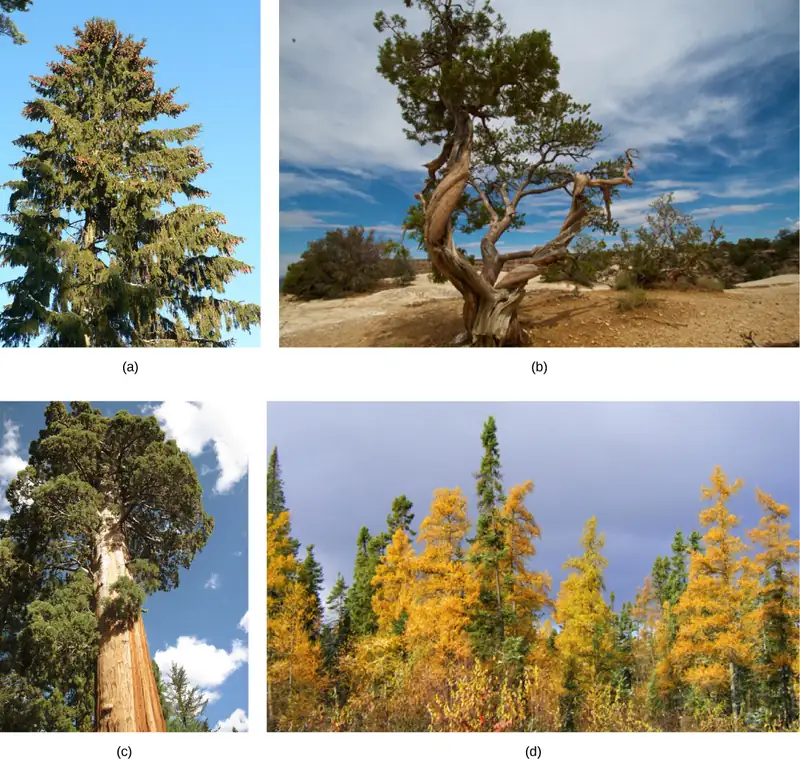
Cycads¶
Cycads thrive in mild climates, and are often mistaken for palms because of the shape of their large, compound leaves. Cycads bear large strobili or cones (Figure 26.10), and may be pollinated by beetles rather than wind, which is unusual for a gymnosperm. Large cycads dominated the landscape during the age of dinosaurs in the Mesozoic, but only a hundred or so smaller species persisted to modern times. They face possible extinction, and several species are protected through international conventions. Because of their attractive shape, they are often used as ornamental plants in gardens in the tropics and subtropics.
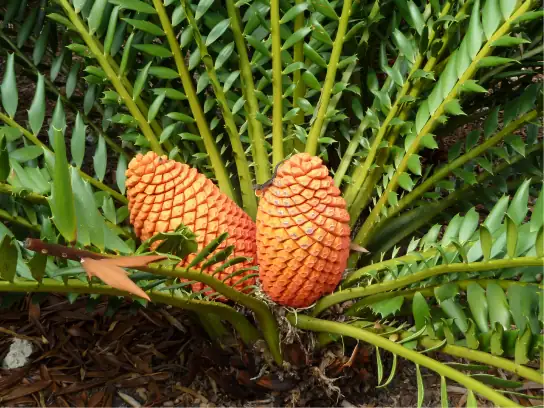
Ginkgophytes¶
The single surviving species of the ginkgophytes group is Ginkgo biloba (Figure 26.11). Its fan-shaped leaves—unique among seed plants because they feature a dichotomous venation pattern—turn yellow in autumn and fall from the tree. For centuries, G. biloba was cultivated by Chinese Buddhist monks in monasteries, which ensured its preservation. It is planted in public spaces because it is unusually resistant to pollution. Male and female organs are produced on separate plants. Typically, gardeners plant only male trees because the seeds produced by the female plant have an off-putting smell of rancid butter.
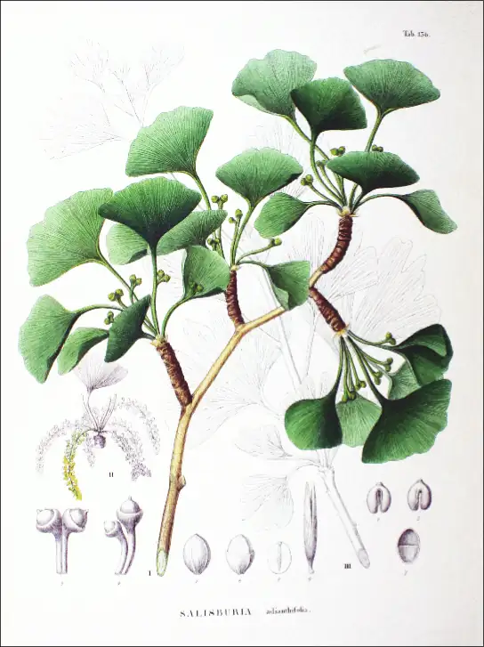
Gnetophytes¶
The phylogenetic position of the gnetophytes is not currently resolved. Their possession of vessel elements suggests they are the closest relative to modern angiosperms. However, molecular analysis places them closer to the conifers. The three living genera are quite dissimilar: Ephedra, Gnetum, and Welwitschia (Figure 26.12), which may indicate that the group is not monophyletic. Like angiosperms, they have broad leaves. Ephedra (Figure 26.12a) occurs in dry areas of the West Coast of the United States and Mexico. Ephedra’s small, scale-like leaves are the source of the compound ephedrine, which is used in medicine as a potent decongestant. Because ephedrine is similar to amphetamines, both in chemical structure and neurological effects, its use is restricted to prescription drugs. Gnetum species (Figure 26.12b) are found in some parts of Africa, South America, and Southeast Asia, and include trees, shrubs and vines. Welwitschia (Figure 26.12c) is found in the Namib desert, and is possibly the oddest member of the group. It produces only two leaves, which grow continuously throughout the life of the plant (some plants are hundreds of years old). Like the ginkgos, Welwitschia produces male and female gametes on separate plants.
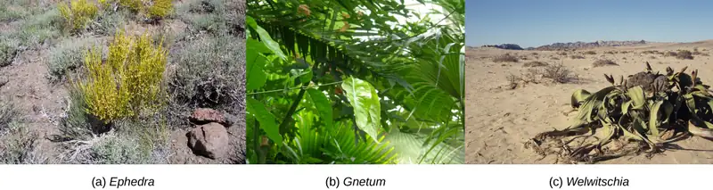
Interactive
Watch this BBC video describing the amazing strangeness of Welwitschia. welwitschia2
26.3 Angiosperms¶
Learning Objectives
By the end of this section, you will be able to do the following:
- Explain why angiosperms are the dominant form of plant life in most terrestrial ecosystems
- Describe the main parts of a flower and their functions
- Detail the life cycle of a typical gymnosperm and angiosperm
- Discuss the similarities and differences between the two main groups of flowering plants
From their humble and still obscure beginning during the early Jurassic period, the angiosperms—or flowering plants—have evolved to dominate most terrestrial ecosystems (Figure 26.13). With more than 300,000 species, the angiosperm phylum (Anthophyta) is second only to insects in terms of diversification.
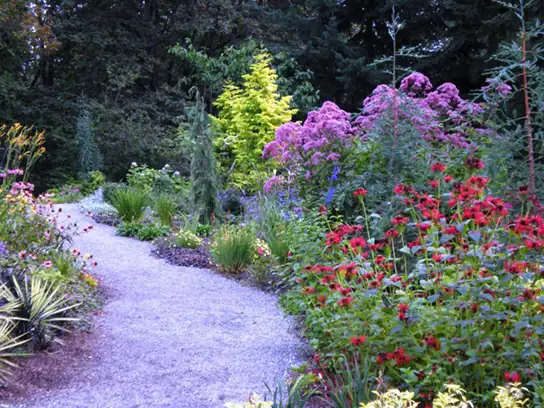
The success of angiosperms is due to two novel reproductive structures: flowers and fruits. The function of the flower is to ensure pollination, often by arthropods, as well as to protect a developing embryo. The colors and patterns on flowers offer specific signals to many pollinating insects or birds and bats that have coevolved with them. For example, some patterns are visible only in the ultraviolet range of light, which can be seen by arthropod pollinators. For some pollinators, flowers advertise themselves as a reliable source of nectar. Flower scent also helps to select its pollinators. Sweet scents tend to attract bees and butterflies and moths, but some flies and beetles might prefer scents that signal fermentation or putrefaction. Flowers also provide protection for the ovule and developing embryo inside a receptacle. The function of the fruit is seed protection and dispersal. Different fruit structures or tissues on fruit—such as sweet flesh, wings, parachutes, or spines that grab—reflect the dispersal strategies that help spread seeds.
Flowers¶
Flowers are modified leaves, or sporophylls, organized around a central receptacle. Although they vary greatly in appearance, virtually all flowers contain the same structures: sepals, petals, carpels, and stamens. The peduncle typically attaches the flower to the plant proper. A whorl of sepals (collectively called the calyx) is located at the base of the peduncle and encloses the unopened floral bud. Sepals are usually photosynthetic organs, although there are some exceptions. For example, the corolla in lilies and tulips consists of three sepals and three petals that look virtually identical. Petals, collectively the corolla, are located inside the whorl of sepals and may display vivid colors to attract pollinators. Sepals and petals together form the perianth. The sexual organs, the female gynoecium and male androecium are located at the center of the flower. Typically, the sepals, petals, and stamens are attached to the receptacle at the base of the gynoecium, but the gynoecium may also be located deeper in the receptacle, with the other floral structures attached above it.
As illustrated in Figure 26.14, the innermost part of a perfect flower is the gynoecium, the location in the flower where the eggs will form. The female reproductive unit consists of one or more carpels, each of which has a stigma, style, and ovary. The stigma is the location where the pollen is deposited either by wind or a pollinating arthropod. The sticky surface of the stigma traps pollen grains, and the style is a connecting structure through which the pollen tube will grow to reach the ovary. The ovary houses one or more ovules, each of which will ultimately develop into a seed. Flower structure is very diverse, and carpels may be singular, multiple, or fused. (Multiple fused carpels comprise a pistil.) The androecium, or male reproductive region is composed of multiple stamens surrounding the central carpel. Stamens are composed of a thin stalk called a filament and a sac-like structure called the anther. The filament supports the anther, where the microspores are produced by meiosis and develop into haploid pollen grains, or male gametophytes.
![Illustration shows parts of a flower, which is called the perianth. The corolla is composed of petals, and the calyx is composed of sepals. At the center of the perianth is a vase-like structure called the gynoecium or, the carpel. A flower may have one or more carpels, but the example shown has only one. The narrow neck of the carpel, called the style, widens into a flat stigma at the top. The ovary is below the neck of the carpel, in the widest part of the vase-like shape. Ovules, or megasporangia, are clusters of pods in the middle of the ovary. The androecium is composed of stamens which cluster around the carpel. The stamen consists a long, stalk-like filament with an anther at the end. The anther shown is tri-lobed. Each lobe, called a microsporangium, is filled with pollen.](img/figure-26-03-02.webp)
The Life Cycle of an Angiosperm¶
The adult or sporophyte phase is the main phase of an angiosperm’s life cycle (Figure 26.15). Like gymnosperms, angiosperms are heterosporous. Therefore, they produce microspores, which will generate pollen grains as the male gametophytes, and megaspores, which will form an ovule that contains female gametophytes. Inside the anther’s microsporangia, male sporocytes divide by meiosis to generate haploid microspores, which, in turn, undergo mitosis and give rise to pollen grains. Each pollen grain contains two cells: one generative cell that will divide into two sperm and a second cell that will become the pollen tube cell.
Visual Connection
![The parts of the flower are shown. The base of the perianth, which includes petals and sepals, is called the flora axis. A narrowing called the articulation separates the floral axis from the lower pedicel, which attached the flower to a stem. Microsporangia are in the anthers. Microspores, or mother cells, form inside the microsporangia. The microspore undergoes meiosis, producing four cells, each of which becomes a grain of pollen with a hard coating. The pollen grain undergoes mitosis, producing a generative cell and a tube cell. Megaspores form inside vase-like carpel, in the ovule, which is in the ovary. The macrospores undergo meiosis, producing four cells. The cells then undergo mitosis, producing three antipodals, two polar nuclei, and egg and two synergids, each with a nucleus. Together, these cells are called the megagametophyte, or embryo sac. Pollination occurs when a pollen grain lands on the stigma, the flat structure at the top of the carpel. The tube nucleus grows into the long style, to the ovary. There, the generative cell of the sperm fertilizes the egg.](img/figure-b26-03-03.webp)
Question: If a flower lacked a megasporangium, what type of gamete would not form? If the flower lacked a microsporangium, what type of gamete would not form?
The ovule, sheltered within the ovary of the carpel, contains the megasporangium protected by two layers of integuments and the ovary wall. Within each megasporangium, a diploid megasporocyte undergoes meiosis, generating four haploid megaspores—three small and one large. Only the large megaspore survives; it divides mitotically three times to produce eight nuclei distributed among the seven cells of the female gametophyte or embryo sac. Three of these cells are located at each pole of the embryo sac. The three cells at one pole become the egg and two synergids. The three cells at the opposite pole become antipodal cells. The center cell contains the remaining two nuclei (polar nuclei). This cell will eventually produce the endosperm of the seed. The mature embryo sac then contains one egg cell, two synergids or “helper” cells, three antipodal cells (which eventually degenerate), and a central cell with two polar nuclei. When a pollen grain reaches the stigma, a pollen tube extends from the grain, grows down the style, and enters through the micropyle: an opening in the integuments of the ovule. The two sperm are deposited in the embryo sac.
A double fertilization event then occurs. One sperm and the egg combine, forming a diploid zygote—the future embryo. The other sperm fuses with the polar nuclei, forming a triploid cell that will develop into the endosperm—the tissue that serves as a food reserve for the developing embryo. The zygote develops into an embryo with a radicle, or small root, and one (monocot) or two (dicot) leaf-like organs called cotyledons. This difference in the number of embryonic leaves is the basis for the two major groups of angiosperms: the monocots and the eudicots. Seed food reserves are stored outside the embryo, in the form of complex carbohydrates, lipids, or proteins. The cotyledons serve as conduits to transmit the broken-down food reserves from their storage site inside the seed to the developing embryo. The seed consists of a toughened layer of integuments forming the coat, the endosperm with food reserves, and at the center, the well-protected embryo.
Most angiosperms have perfect flowers, which means that each flower carries both stamens and carpels (Figure 26.15). In monoecious plants, male (staminate) and female (pistillate) flowers are separate, but carried on the same plant. Sweetgums (Liquidambar spp.) and birches (Betula spp.) are monoecious (Figure 26.16). In dioecious plants, male and female flowers are found on separate plants. Willows (Salix spp.) and poplars (Populus spp.) are dioecious. In spite of the predominance of perfect flowers, only a few species of angiosperms self-pollinate. Both anatomical and environmental barriers promote cross-pollination mediated by a physical agent (wind or water), or an animal, such as an insect or bird. Cross-pollination increases genetic diversity in a species.
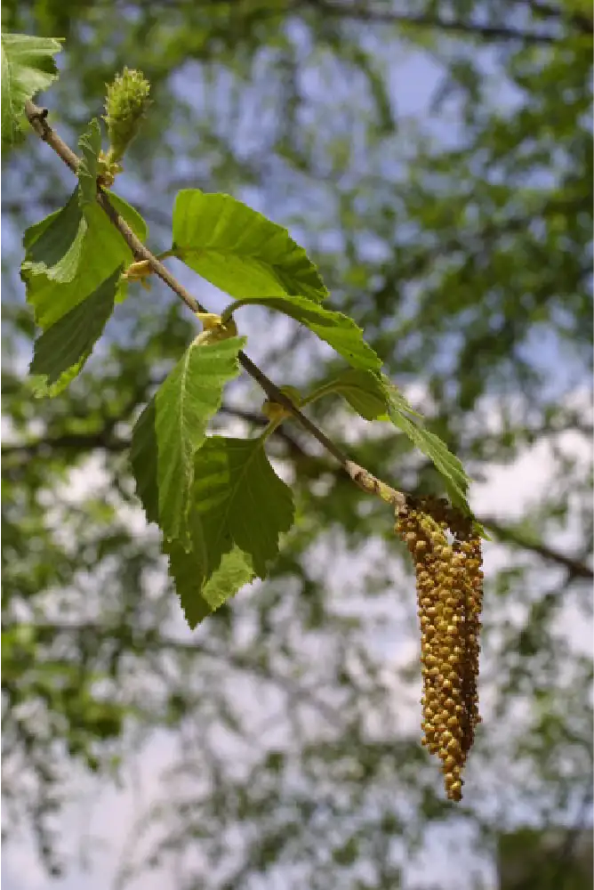
Fruit¶
As the seed develops, the walls of the ovary thicken and form the fruit. The seed forms in an ovary, which also enlarges as the seeds grow. Many foods commonly called vegetables are actually fruits. Eggplants, zucchini, string beans, tomatoes, and bell peppers are all technically fruits because they contain seeds and are derived from the thick ovary tissue. Acorns are true nuts, and winged maple “helicopter seeds” or whirligigs (whose botanical name is samara) are also fruits. Botanists classify fruit into more than two dozen different categories, only a few of which are actually fleshy and sweet.
Mature fruit can be fleshy or dry. Fleshy fruit include the familiar berries, peaches, apples, grapes, and tomatoes. Rice, wheat, and nuts are examples of dry fruit. Another subtle distinction is that not all fruits are derived from just the ovary. For instance, strawberries are derived from the ovary as well as the receptacle, and apples are formed from the ovary and the pericarp, or hypanthium. Some fruits are derived from separate ovaries in a single flower, such as the raspberry. Other fruits, such as the pineapple, form from clusters of flowers. Additionally, some fruits, like watermelon and orange, have rinds. Regardless of how they are formed, fruits are an agent of seed dispersal. The variety of shapes and characteristics reflect the mode of dispersal. Wind carries the light dry fruits of trees and dandelions. Water transports floating coconuts. Some fruits attract herbivores with their color or scent, or as food. Once eaten, tough, undigested seeds are dispersed through the herbivore’s feces (endozoochory). Other fruits have burrs and hooks to cling to fur and hitch rides on animals (epizoochory).
Diversity of Angiosperms¶
Angiosperms are classified in a single phylum: the Anthophyta. Modern angiosperms appear to be a monophyletic group, which as you may recall means that they originated from a single ancestor. Within the angiosperms are three major groups: basal angiosperms, monocots, and dicots. Basal angiosperms are a group of plants that are believed to have branched off before the separation of the monocots and dicots, because they exhibit traits from both groups. They are categorized separately in most classification schemes. The basal angiosperms include Amborella, water lilies, the Magnoliids (magnolia trees, laurels, and spice peppers), and a group called the Austrobaileyales, which includes the star anise. The monocots and dicots are differentiated on the basis of the structure of the cotyledons, pollen grains, and other structures. Monocots include grasses and lilies, and the dicots form a multi-branched group that includes (among many others) roses, cabbages, sunflowers, and mints.
Basal Angiosperms¶
The Magnoliidae are represented by the magnolias, laurels, and peppers. Magnolias are tall trees bearing dark, shiny leaves, and large, fragrant flowers with many parts, and are considered archaic (Figure 26.17). In the outer whorl of the magnolia flower the sepals and petals are undifferentiated and are collectively called tepals. The reproductive parts are arranged in a spiral around a cone-shaped receptacle, with the carpels located above the stamens (Figure 26.17). The aggregate fruit, with one seed formed from each carpel, is seen in Figure 26.18d. Laurel trees produce fragrant leaves and small, inconspicuous flowers. The Laurales grow mostly in warmer climates and are small trees and shrubs. Familiar plants in this group include the bay laurel, cinnamon, spice bush (Figure 26.18a), and avocado tree.
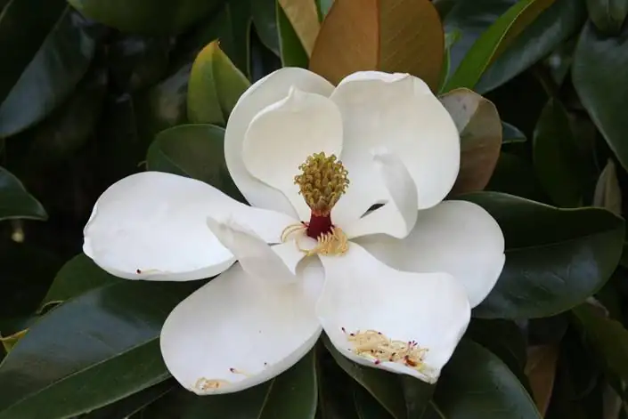
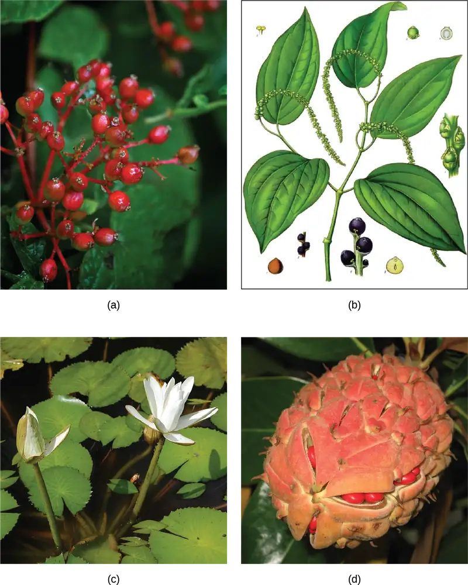
Monocots¶
Plants in the monocot group are primarily identified by the presence of a single cotyledon in the seedling. Other anatomical features shared by monocots include veins that run parallel to and along the length of the leaves, and flower parts that are arranged in a three- or six-fold symmetry. True woody tissue is rarely found in monocots. In palm trees, vascular and parenchyma tissues produced by the primary and secondary thickening meristems form the trunk. The pollen from the first angiosperms was likely monosulcate, containing a single furrow or pore through the outer layer. This feature is still seen in the modern monocots. Vascular tissue of the stem is scattered, not arranged in any particular pattern, but is organized in a ring in the roots. The root system consists of multiple fibrous roots, with no major tap root. Adventitious roots often emerge from the stem or leaves. The monocots include familiar plants such as the true lilies (Liliopsida), orchids, yucca, asparagus, grasses, and palms. Many important crops are monocots, such as rice and other cereals, corn, sugar cane, and tropical fruits like bananas and pineapples (Figure 26.19a,b,c).
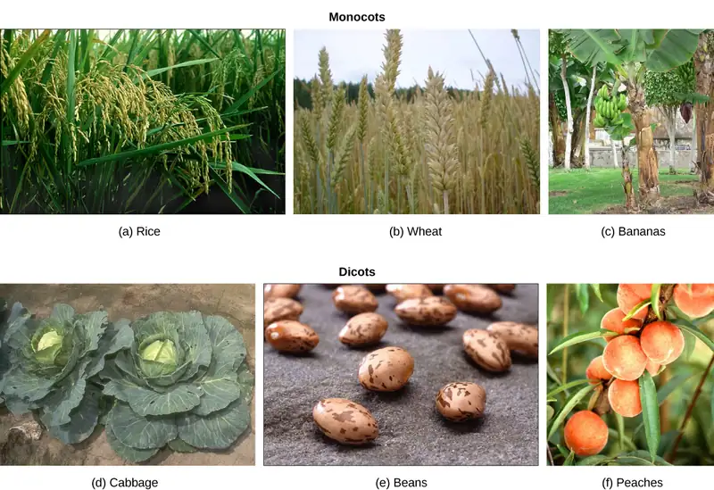
Eudicots¶
Eudicots, or true dicots, are characterized by the presence of two cotyledons in the developing shoot. Veins form a network in leaves, and flower parts come in four, five, or many whorls. Vascular tissue forms a ring in the stem; in monocots, vascular tissue is scattered in the stem. Eudicots can be herbaceous (not woody), or produce woody tissues. Most eudicots produce pollen that is trisulcate or triporate, with three furrows or pores. The root system is usually anchored by one main root developed from the embryonic radicle. Eudicots comprise two-thirds of all flowering plants. The major differences between monocots and eudicots are summarized in Table 26.1. However, some species may exhibit characteristics usually associated with the other group, so identification of a plant as a monocot or a eudicot is not always straightforward.
Table 26.1
| Comparison of Structural Characteristics of Monocots and Eudicots | ||
|---|---|---|
| Characteristic | Monocot | Eudicot |
| Cotyledon | One | Two |
| Veins in Leaves | Parallel | Network (branched) |
| Stem Vascular Tissue | Scattered | Arranged in ring pattern |
| Roots | Network of fibrous roots | Tap root with many lateral roots |
| Pollen | Monosulcate | Trisulcate |
| Flower Parts | Three or multiple of three | Four, five, multiple of four or five and whorls |
26.4 The Role of Seed Plants¶
Learning Objectives
By the end of this section, you will be able to do the following:
- Explain how angiosperm diversity is due, in part, to multiple complex interactions with animals
- Describe ways in which pollination occurs
- Discuss the roles that plants play in ecosystems and how deforestation threatens plant biodiversity
Without seed plants, life as we know it would not be possible. Plants play a key role in the maintenance of terrestrial ecosystems through the stabilization of soils, cycling of carbon, and climate moderation. Large tropical forests release oxygen and act as carbon dioxide “sinks.” Seed plants provide shelter to many life forms, as well as food for herbivores, thereby indirectly feeding carnivores. Plant secondary metabolites are used for medicinal purposes and industrial production. Virtually all animal life is dependent on plants for survival.
Animals and Plants: Herbivory¶
Coevolution of flowering plants and insects is a hypothesis that has received much attention and support, especially because both angiosperms and insects diversified at about the same time in the middle Mesozoic. Many authors have attributed the diversity of plants and insects to both pollination and herbivory, or the consumption of plants by insects and other animals. Herbivory is believed to have been as much a driving force as pollination. Coevolution of herbivores and plant defenses is easily and commonly observed in nature. Unlike animals, most plants cannot outrun predators or use mimicry to hide from hungry animals (although mimicry has been used to entice pollinators). A sort of arms race exists between plants and herbivores. To “combat” herbivores, some plant seeds—such as acorn and unripened persimmon—are high in alkaloids and therefore unsavory to some animals. Other plants are protected by bark, although some animals developed specialized mouth pieces to tear and chew vegetal material. Spines and thorns (Figure 26.20) deter most animals, except for mammals with thick fur, and some birds have specialized beaks to get past such defenses.
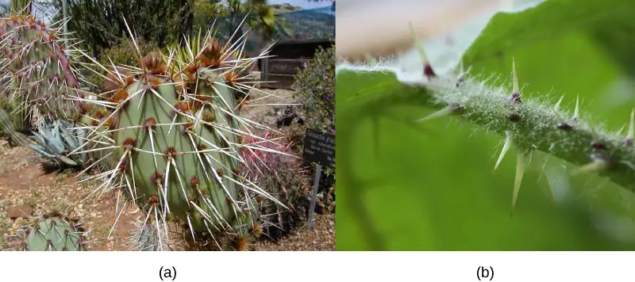
Herbivory has been exploited by seed plants for their own benefit. The dispersal of fruits by herbivorous animals is a striking example of mutualistic relationships. The plant offers to the herbivore a nutritious source of food in return for spreading the plant’s genetic material to a wider area.
An extreme example of coevolution (discovered by Daniel Janzen) between an animal and a plant is exemplified by Mexican acacia trees and their attendant acacia ants Pseudomyrmex spp. (this is termed myrmecophytism). The trees support the ants with shelter and food: The ants nest in the hollows of large thorns produced by the tree and feed on sugary secretions produced at the ends of the leaves. The sugar pellets also help to keep the ants from interfering with insect pollinators. In return, ants discourage herbivores, both invertebrates and vertebrates, by stinging and attacking leaf-eaters and insects ovipositing on the plants. The ants also help to remove potential plant pathogens, such as fungal growths. Another case of insect-plant coevolution is found in bracken fern (Pteridium aquilinum), whose subspecies are found throughout the world. Bracken ferns produce a number of “secondary plant compounds” in their adult fronds that serve as defensive compounds against nonadapted insect attack (these compounds include cyanogenic glucosides, tannins, and phenolics). However, during the “fiddlehead” or crozier stage, bracken secretes nutritious sugary and proteinaceous compounds from special “nectaries” that attract ants and even species of jumping spiders, all of which defend the plant’s croziers until they are fully unfolded. These opportunistic groups of protective arthropods greatly reduce the damage that otherwise would occur during the early stages of growth.
Animals and Plants: Pollination¶
Flowers pollinated by wind are usually small, feathery, and visually inconspicuous. Grasses are a successful group of flowering plants that are wind pollinated. They produce large amounts of powdery pollen carried over large distances by the wind. Some large trees such as oaks, maples, and birches are also wind pollinated.
Interactive
Explore this website for additional information on pollinators.
More than 80 percent of angiosperms depend on animals for pollination (technically the transfer of pollen from the anther to the stigma). Consequently, plants have developed many adaptations to attract pollinators. With over 200,000 different plants dependent on animal pollination, the plant needs to advertise to its pollinators with some specificity. The specificity of specialized plant structures that target animals can be very surprising. It is possible, for example, to determine the general type of pollinators favored by a plant by observing the flower’s physical characteristics. Many bird or insect-pollinated flowers secrete nectar, which is a sugary liquid. They also produce both fertile pollen, for reproduction, and sterile pollen rich in nutrients for birds and insects. Many butterflies and bees can detect ultraviolet light, and flowers that attract these pollinators usually display a pattern of ultraviolet reflectance that helps them quickly locate the flower's center. In this manner, pollinating insects collect nectar while at the same time are dusted with pollen (Figure 26.21). Large, red flowers with little smell and a long funnel shape are preferred by hummingbirds, who have good color perception, a poor sense of smell, and need a strong perch. White flowers that open at night attract moths. Other animals—such as bats, lemurs, and lizards—can also act as pollinating agents. Any disruption to these interactions, such as the disappearance of bees, for example as a consequence of colony collapse disorders, can lead to disaster for agricultural industries that depend heavily on pollinated crops.
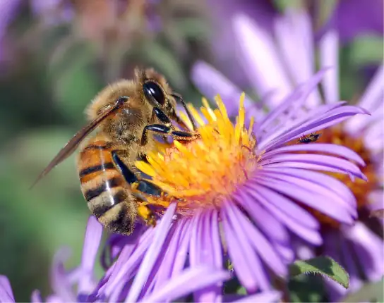
Scientific Method Connection
Testing Attraction of Flies by Rotting Flesh Smell
Question: Will flowers that offer cues to bees attract carrion flies if sprayed with compounds that smell like rotten flesh?
Background: Visitation of flowers by pollinating flies is a function mostly of smell. Flies are attracted by rotting flesh and carrions. The putrid odor seems to be the major attractant. The polyamines putrescine and cadaverine, which are the products of protein breakdown after animal death, are the source of the pungent smell of decaying meat. Some plants strategically attract flies by synthesizing polyamines similar to those generated by decaying flesh and thereby attract carrion flies.
Flies seek out dead animals because they normally lay their eggs on them and their maggots feed on the decaying flesh. Interestingly, time of death can be determined by a forensic entomologist based on the stages and type of maggots recovered from cadavers.
Hypothesis: Because flies are drawn to other organisms based on smell and not sight, a flower that is normally attractive to bees because of its colors will attract flies if it is sprayed with polyamines similar to those generated by decaying flesh.
Test the hypothesis:
- Select flowers usually pollinated by bees. White petunia may be a good choice.
- Divide the flowers into two groups, and while wearing eye protection and gloves, spray one group with a solution of either putrescine or cadaverine. (Putrescine dihydrochloride is typically available in 98 percent concentration; this can be diluted to approximately 50 percent for this experiment.)
- Place the flowers in a location where flies are present, keeping the sprayed and unsprayed flowers separated.
- Observe the movement of the flies for one hour. Record the number of visits to the flowers using a table similar to Table 26.2. Given the rapid movement of flies, it may be beneficial to use a video camera to record the fly–flower interaction. Replay the video in slow motion to obtain an accurate record of the number of fly visits to the flowers.
- Repeat the experiment four more times with the same species of flower, but using different specimens.
- Repeat the entire experiment with a different type of flower that is normally pollinated by bees.
Table 26.2
| Results of Number of Visits by Flies to Sprayed and Control/Unsprayed Flowers | ||
|---|---|---|
| Trial # | Sprayed Flowers | Unsprayed Flowers |
| 1 | ||
| 2 | ||
| 3 | ||
| 4 | ||
| 5 | ||
Analyze your data: Review the data you have recorded. Average the number of visits that flies made to sprayed flowers over the course of the five trials (on the first flower type) and compare and contrast them to the average number of visits that flies made to the unsprayed/control flowers. Can you draw any conclusions regarding the attraction of the flies to the sprayed flowers?
For the second flower type used, average the number of visits that flies made to sprayed flowers over the course of the five trials and compare and contrast them to the average number of visits that flies made to the unsprayed/control flowers. Can you draw any conclusions regarding the attraction of the flies to the sprayed flowers?
Compare and contrast the average number of visits that flies made to the two flower types. Can you draw any conclusions about whether the appearance of the flower had any impact on the attraction of flies? Did smell override any appearance differences, or were the flies attracted to one flower type more than another?
Form a conclusion: Do the results support the hypothesis? If not, how can your observations be explained?
The Importance of Seed Plants in Human Life¶
Seed plants are the foundation of human diets across the world (Figure 26.22). Many societies eat almost exclusively vegetarian fare and depend solely on seed plants for their nutritional needs. A few crops (rice, wheat, and potatoes) dominate the agricultural landscape. Many crops were developed during the agricultural revolution, when human societies made the transition from nomadic hunter–gatherers to horticulture and agriculture. Cereals, rich in carbohydrates, provide the staple of many human diets. Beans and nuts supply proteins. Fats are derived from crushed seeds, as is the case for peanut and rapeseed (canola) oils, or fruits such as olives. Animal husbandry also consumes large quantities of crop plants.
Staple crops are not the only food derived from seed plants. Various fruits and vegetables provide nutrient macromolecules, vitamins, minerals, and fiber. Sugar, to sweeten dishes, is produced from the monocot sugarcane and the eudicot sugar beet. Drinks are made from infusions of tea leaves, chamomile flowers, crushed coffee beans, or powdered cocoa beans. Spices come from many different plant parts: saffron and cloves are stamens and buds, black pepper and vanilla are seeds, the bark of a bush in the Laurales family supplies cinnamon, and the herbs that flavor many dishes come from dried leaves and fruit, such as the pungent red chili pepper. The volatile oils of a number of flowers and bark provide the scent of perfumes.
Additionally, no discussion of seed plant contribution to human diet would be complete without the mention of alcohol. Fermentation of plant-derived sugars and starches is used to produce alcoholic beverages in all societies. In some cases, the beverages are derived from the fermentation of sugars from fruit, as with wines and, in other cases, from the fermentation of carbohydrates derived from seeds, as with beers. The sharing of foods and beverages also contributes to human social ritual.
Seed plants have many other uses, including providing wood as a source of timber for construction, fuel, and material to build furniture. Most paper is derived from the pulp of coniferous trees. Fibers of seed plants such as cotton, flax, and hemp are woven into cloth. Textile dyes, such as indigo, were mostly of plant origin until the advent of synthetic chemical dyes.
Lastly, it is more difficult to quantify the benefits of ornamental seed plants. These grace private and public spaces, adding beauty and serenity to human lives and inspiring painters and poets alike.
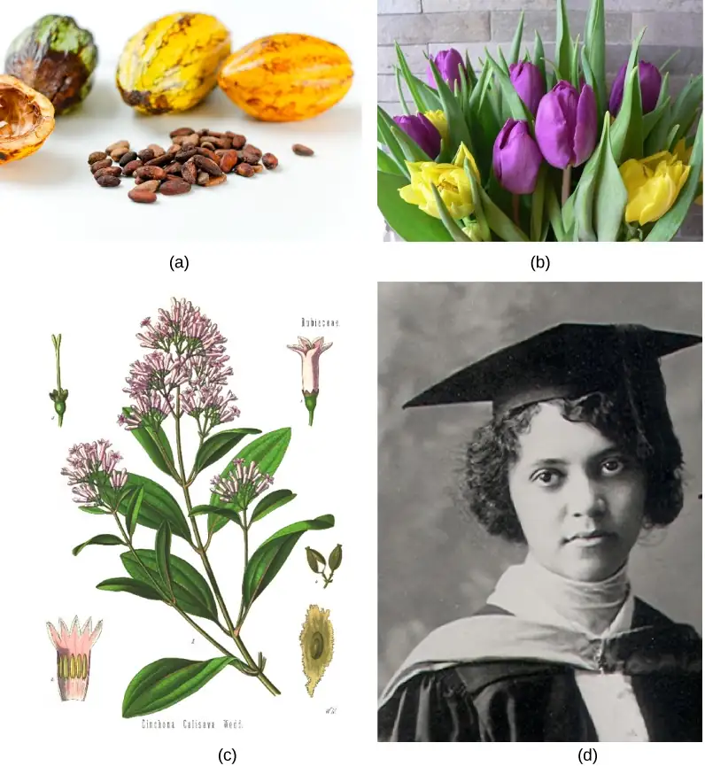
The medicinal properties of plants have been known to human societies since ancient times. There are references to the use of plants’ curative properties in Egyptian, Babylonian, and Chinese writings from 5,000 years ago. Many modern synthetic therapeutic drugs are derived or synthesized from plant secondary metabolites. Very often, the raw form of the plant or plant-based substance may be unusable even if it demonstrates helpful properties. For example, chaulmoogra oil was somewhat effective for treating leprosy, but it was difficult to apply and painful for patients. In 1915, Alice Ball (at only 23-years old), created a method for extracting the active ester compounds from the oil so that it could be absorbed by the body, creating a much more effective treatment without the negative side effects. The "Ball Technique" remained the preferred method until synthetic medicines replaced it decades later. It is important to note that the same plant extract can be a therapeutic remedy at low concentrations, become an addictive drug at higher doses, and can potentially kill at high concentrations. Table 26.3 presents a few drugs, their plants of origin, and their medicinal applications.
Table 26.3
| Plant Origin of Medicinal Compounds and Medical Applications | ||
|---|---|---|
| Plant | Compound | Application |
| Deadly nightshade (Atropa belladonna) | Atropine | Dilate eye pupils for eye exams |
| Foxglove (Digitalis purpurea) | Digitalis | Heart disease, stimulates heart beat |
| Yam (Dioscorea spp.) | Steroids | Steroid hormones: contraceptive pill and cortisone |
| Ephedra (Ephedra spp.) | Ephedrine | Decongestant and bronchiole dilator |
| Pacific yew (Taxus brevifolia) | Taxol | Cancer chemotherapy; inhibits mitosis |
| Opium poppy (Papaver somniferum) | Opioids | Analgesic (reduces pain without loss of consciousness) and narcotic (reduces pain with drowsiness and loss of consciousness) in higher doses |
| Quinine tree (Cinchona spp.) | Quinine | Antipyretic (lowers body temperature) and antimalarial |
| Willow (Salix spp.) | Salicylic acid (aspirin) | Analgesic and antipyretic |
Plant-based medicines are critical to health, but another challenge to their use is the availability and localization of the source. In many cases, as a medicine becomes widely used, supply limitations may lead to high costs and shortages, and any unforeseen issues, such as natural disasters, create challenges with availability. In most cases, scientists and pharmaceutical producers seek synthetic versions of the chemicals, and/or ways to mass produce them outside the normal process of plant growth. Chemist Percy Julian developed ways to mass produce numerous drugs, including methods to synthesize the glaucoma treatment physostigmine, mass produce progesterone from soybeans to prevent miscarriages, and inexpensively synthesize the widely used medicines cortisone and hydrocortisone. Efforts like these greatly increased both the access and consistency of medicines.
Career Connection: Ethnobotanist
The relatively new field of ethnobotany studies the interaction between a particular culture and the plants native to the region. Seed plants have a large influence on day-to-day human life. Not only are plants the major source of food and medicine, they also influence many other aspects of society, from clothing to industry. The medicinal properties of plants were recognized early on in human cultures. From the mid-1900s, synthetic chemicals began to supplant plant-based remedies.
Pharmacognosy is the branch of pharmacology that focuses on medicines derived from natural sources. With massive globalization and industrialization, it is possible that much human knowledge of plants and their medicinal purposes will disappear with the cultures that fostered them. This is where ethnobotanists come in. To learn about and understand the use of plants in a particular culture, an ethnobotanist must bring in knowledge of plant life and an understanding and appreciation of diverse cultures and traditions. The Amazon forest is home to an incredible diversity of vegetation and is considered an untapped resource of medicinal plants; yet, both the ecosystem and its indigenous cultures are threatened with extinction.
To become an ethnobotanist, a person must acquire a broad knowledge of plant biology, ecology, and sociology. Not only are the plant specimens studied and collected, but also the stories, recipes, and traditions that are linked to them. For ethnobotanists, plants are not viewed solely as biological organisms to be studied in a laboratory, but as an integral part of human culture. The convergence of molecular biology, anthropology, and ecology make the field of ethnobotany a truly multidisciplinary science.
Biodiversity of Plants¶
Biodiversity ensures a resource for new food crops and medicines. Plant life balances ecosystems, protects watersheds, mitigates erosion, moderates our climate, and provides shelter for many animal species. Threats to plant diversity, however, come from many sources. The explosion of the human population, especially in tropical countries where birth rates are highest and economic development is in full swing, is leading to devastating human encroachment into forested areas. To feed the growing population, humans need to obtain arable land, so there has been and continues to be massive clearing of trees. The need for more energy to power larger cities and economic growth therein leads to the construction of dams, the consequent flooding of ecosystems, and increased emissions of pollutants. Other threats to tropical forests come from poachers, who log trees for their precious wood. Ebony and Brazilian rosewood, both on the endangered list, are examples of tree species driven almost to extinction by indiscriminate logging. This unfortunate practice continues unabated today largely due to lack of population control and political willpower.
The number of plant species becoming extinct is increasing at an alarming rate. Because ecosystems are in a delicate balance, and seed plants maintain close mutualistic relationships with animals—whether predators or pollinators—the disappearance of a single plant can lead to the extinction of connected animal species. A real and pressing issue is that many plant species have not yet been catalogued, and so their place in the ecosystem is unknown. These unknown species are threatened by logging, habitat destruction, and loss of pollinators. They may become extinct before we have the chance to begin to understand the possible impacts from their disappearance. Efforts to preserve biodiversity take several lines of action, from preserving heirloom seeds to barcoding species. Heirloom seeds come from plants that were traditionally grown in human populations, as opposed to the seeds used for large-scale agricultural production. Barcoding is a technique in which one or more short gene sequences, taken from a well-characterized portion of DNA found in most genomes, are used to identify a species through DNA analysis.
Chapter Review¶
Key Terms¶
- anther
- sac-like structure at the tip of the stamen in which pollen grains are produced
- Anthophyta
- phylum to which angiosperms belong
- barcoding
- molecular biology technique in which one or more short gene sequences taken from a well-characterized portion of the genome is used to identify a species
- basal angiosperms
- a group of plants that probably branched off before the separation of monocots and eudicots
- calyx
- whorl of sepals
- carpel
- single unit of the pistil
- conifer
- dominant phylum of gymnosperms with the greatest variety of trees
- corolla
- collection of petals
- cotyledon
- primitive leaf that develops in the zygote; monocots have one cotyledon, and dicots have two cotyledons
- crop
- cultivated plant
- cycad
- gymnosperm that grows in tropical climates and resembles a palm tree; member of the phylum Cycadophyta
- dicot
- (also, eudicot) related group of angiosperms whose embryos possess two cotyledons
- dioecious
- describes a species in which the male and female reproductive organs are carried on separate specimens
- filament
- thin stalk that links the anther to the base of the flower
- flower
- branches specialized for reproduction found in some seed-bearing plants, containing either specialized male or female organs or both male and female organs
- fruit
- thickened tissue derived from ovary wall that protects the embryo after fertilization and facilitates seed dispersal
- ginkgophyte
- gymnosperm with one extant species, the Ginkgo biloba: a tree with fan-shaped leaves
- gnetophyte
- gymnosperm shrub with varied morphological features that produces vessel elements in its woody tissues; the phylum includes the genera Ephedra, Gnetum, and Welwitschia
- gymnosperm
- seed plant with naked seeds (seeds exposed on modified leaves or in cones)
- gynoecium
- (also, carpel) structure that constitutes the female reproductive organ
- heirloom seed
- seed from a plant that was grown historically, but has not been used in modern agriculture on a large scale
- herbaceous
- grass-like plant noticeable by the absence of woody tissue
- herbivory
- consumption of plants by insects and other animals
- integument
- layer of sporophyte tissue that surrounds the megasporangium, and later, the embryo
- megasporocyte
- megaspore mother cell; larger spore that germinates into a female gametophyte in a heterosporous plant
- microsporocyte
- smaller spore that produces a male gametophyte in a heterosporous plant
- monocot
- related group of angiosperms that produce embryos with one cotyledon and pollen with a single ridge
- monoecious
- describes a species in which the male and female reproductive organs are on the same plant
- nectar
- liquid rich in sugars produced by flowers to attract animal pollinators
- ovary
- chamber that contains and protects the ovule or female megasporangium
- ovulate cone
- cone containing two ovules per scale
- ovule
- female gametophyte
- paraphyletic group
- not all descendants of a single common ancestor are included in the group
- perianth
- part of the plant consisting of the calyx (sepals) and corolla (petals)
- petal
- modified leaf interior to the sepals; colorful petals attract animal pollinators
- pistil
- fused group of carpels
- pollen grain
- structure containing the male gametophyte of the plant
- pollen tube
- extension from the pollen grain that delivers sperm to the egg cell
- pollination
- transfer of pollen from the anther to the stigma
- progymnosperm
- transitional group of plants that resembled conifers because they produced wood, yet still reproduced like ferns
- seed
- structure containing the embryo, storage tissue, and protective coat
- sepal
- modified leaf that encloses the bud; outermost structure of a flower
- spermatophyte
- seed plant; from the Greek sperm (seed) and phyte (plant)
- stamen
- structure that contains the male reproductive organs
- stigma
- uppermost structure of the carpel where pollen is deposited
- strobilus
- plant structure with a tight arrangement of sporophylls around a central stalk, as seen in cones or flowers; the male strobilus produces pollen, and the female strobilus produces eggs
- style
- long, thin structure that links the stigma to the ovary
Summary¶
26.1 Evolution of Seed Plants¶
Seed plants appeared about 350 million years ago, during the Carboniferous period. Two major innovations were seeds and pollen. Seeds protect the embryo from desiccation and provide it with a store of nutrients to support the early growth of the sporophyte. Seeds are also equipped to delay germination until growth conditions are optimal. Pollen allows seed plants to reproduce in the absence of water. The gametophytes of seed plants shrank, while the sporophytes became prominent structures and the diploid stage became the longest phase of the life cycle.
In the gymnosperms, which appeared during the drier Permian period and became the dominant group during the Triassic, pollen was dispersed by wind, and their naked seeds developed in the sporophylls of a strobilus. Angiosperms bear both flowers and fruit. Flowers expand the possibilities for pollination, especially by insects, who have coevolved with the flowering plants. Fruits offer additional protection to the embryo during its development, and also assist with seed dispersal. Angiosperms appeared during the Mesozoic era and have become the dominant plant life in terrestrial habitats.
26.2 Gymnosperms¶
Gymnosperms are heterosporous seed plants that produce naked seeds. They appeared in the Paleozoic period and were the dominant plant life during the Mesozoic. Modern-day gymnosperms belong to four phyla. The largest phylum, Coniferophyta, is represented by conifers, the predominant plants at high altitude and latitude. Cycads (phylum Cycadophyta) resemble palm trees and grow in tropical climates. Ginkgophyta is represented today by a single species, Ginkgo biloba. The last phylum, Gnetophyta, is a diverse group of plants that produce vessel elements in their wood.
26.3 Angiosperms¶
Angiosperms are the dominant form of plant life in most terrestrial ecosystems, comprising about 90 percent of all plant species. Most crops and ornamental plants are angiosperms. Their success comes from two innovative structures that protect reproduction from variability in the environment: the flower and the fruit. Flowers were derived from modified leaves; their color and fragrance encourages species-specific pollination. The main parts of a flower are the sepals and petals, which protect the reproductive parts: the stamens and the carpels. The stamens produce the male gametes in pollen grains. The carpels contain the female gametes (the eggs inside the ovules), which are within the ovary of a carpel. The walls of the ovary thicken after fertilization, ripening into fruit that ensures dispersal by wind, water, or animals.
The angiosperm life cycle is dominated by the sporophyte stage. Double fertilization is an event unique to angiosperms. One sperm in the pollen fertilizes the egg, forming a diploid zygote, while the other combines with the two polar nuclei, forming a triploid cell that develops into a food storage tissue called the endosperm. Flowering plants are divided into two main groups, the monocots and eudicots, according to the number of cotyledons in the seedlings. Basal angiosperms belong to an older lineage than monocots and eudicots.
26.4 The Role of Seed Plants¶
Angiosperm diversity is due in part to multiple interactions with animals. Herbivory has favored the development of defense mechanisms in plants, and avoidance of those defense mechanisms in animals. Conversely, seed dispersal can be aided by animals that eat plant fruits. Pollination (the transfer of pollen to a carpel) is mainly carried out by wind and animals, and angiosperm fruits and seeds have evolved numerous adaptations to capture the wind or attract specific classes of animals.
Plants play a key role in ecosystems. They are a source of food and medicinal compounds, and provide raw materials for many industries. Rapid deforestation and industrialization, however, threaten plant biodiversity. In turn, this threatens the ecosystem.
Review Questions¶
26.1 Evolution of Seed Plants¶
1. Seed plants are ________.
- all homosporous
- mostly homosporous with some heterosporous
- mostly heterosporous with some homosporous
- all heterosporous
Answer
D
2. Besides the seed, what other major structure diminishes a plant’s reliance on water for reproduction?
- flower
- fruit
- pollen
- spore
Answer
A
3. In which of the following geological periods would gymnosperms dominate the landscape?
- Carboniferous
- Permian
- Triassic
- Eocene (present)
Answer
C
4. Which of the following structures widens the geographic range of a species and is an agent of dispersal?
- seed
- flower
- leaf
- root
Answer
A
26.2 Gymnosperms¶
5. Which of the following traits characterizes gymnosperms?
- The plants carry exposed seeds on modified leaves.
- Reproductive structures are located in a flower.
- After fertilization, the ovary thickens and forms a fruit.
- The gametophyte is the longest phase of the life cycle.
Answer
A
6. Megasporocytes will eventually produce which of the following?
- pollen grain
- sporophytes
- male gametophytes
- female gametophytes
Answer
D
7. What is the ploidy of the following structures: gametophyte, seed, spore, sporophyte?
- 1n, 1n, 2n, 2n
- 1n, 2n, 1n, 2n
- 2n, 1n, 2n, 1n
- 2n, 2n, 1n, 1n
Answer
B
8. In the northern forests of Siberia, a tall tree is most likely a:
- conifer
- cycad
- Ginkgo biloba
- gnetophyte
Answer
A
26.3 Angiosperms¶
9. Which of the following structures in a flower is not directly involved in reproduction?
- the style
- the stamen
- the sepal
- the anther
Answer
C
10. Pollen grains develop in which structure?
- the anther
- the stigma
- the filament
- the carpel
Answer
A
11. In the course of double fertilization, one sperm cell fuses with the egg and the second one fuses with ________.
- the synergids
- the polar nuclei of the center cell
- the egg as well
- the antipodal cells
Answer
B
12. Corn develops from a seedling with a single cotyledon, displays parallel veins on its leaves, and produces monosulcate pollen. It is most likely:
- a gymnosperm
- a monocot
- a eudicot
- a basal angiosperm
Answer
B
26.4 The Role of Seed Plants¶
13. Which of the following plant structures is not a defense against herbivory?
- thorns
- spines
- nectar
- alkaloids
Answer
C
14. White and sweet-smelling flowers with abundant nectar are probably pollinated by
- bees and butterflies
- flies
- birds
- wind
Answer
A
15. Abundant and powdery pollen produced by small, indistinct flowers is probably transported by:
- bees and butterflies
- flies
- birds
- wind
Answer
D
16. Plants are a source of ________.
- food
- fuel
- medicine
- all of the above
Answer
D
Critical Thinking Questions¶
26.1 Evolution of Seed Plants¶
17. The Cretaceous Period was marked by the increase in number and variety of angiosperms. Insects also diversified enormously during the same period. Can you propose the reason or reasons that could foster coevolution?
Answer
Both pollination and herbivory contributed to diversity, with plants needing to attract some insects and repel others.
18. What role did the adaptations of seed and pollen play in the development and expansion of seed plants?
Answer
Seeds and pollen allowed plants to reproduce in absence of water. This allowed them to expand their range onto dry land and to survive drought conditions.
26.2 Gymnosperms¶
19. The Mediterranean landscape along the sea shore is dotted with pines and cypresses. The weather is not cold, and the trees grow at sea level. What evolutionary adaptation of conifers makes them suitable to the Mediterranean climate?
Answer
The trees are adapted to arid weather, and do not lose as much water due to transpiration as non-conifers.
20. What are the four modern-day phyla of gymnosperms?
Answer
The four modern-day phyla of gymnosperms are Coniferophyta, Cycadophyta, Ginkgophyta, and Gnetophyta.
26.3 Angiosperms¶
21. Some cycads are considered endangered species and their trade is severely restricted. Customs officials stop suspected smugglers who claim that the plants in their possession are palm trees, not cycads. How would a botanist distinguish between the two types of plants?
Answer
The resemblance between cycads and palm trees is only superficial. Cycads are gymnosperms and do not bear flowers or fruit. Cycads produce cones: large, female cones that produce naked seeds, and smaller male cones on separate plants. Palms do not.
22. What are the two structures that allow angiosperms to be the dominant form of plant life in most terrestrial ecosystems?
Answer
Angiosperms are successful because of flowers and fruit. These structures protect reproduction from variability in the environment.
26.4 The Role of Seed Plants¶
23. Biosynthesis of nectar and nutrient-rich pollen is energetically very expensive for a plant. Yet, plants funnel large amounts of energy into animal pollination. What are the evolutionary advantages that offset the cost of attracting animal pollinators?
Answer
Using animal pollinators promotes cross-pollination and increases genetic diversity. The odds that the pollen will reach another flower are greatly increased compared with the randomness of wind pollination.
24. What is biodiversity and why is it important to an ecosystem?
Answer
Biodiversity is the variation in all forms of life. It can refer to variation within a species, within an ecosystem, or on an entire planet. It is important because it ensures a resource for new food crops and medicines. Plant life balances the ecosystems, protects watersheds, mitigates erosion, moderates climate, and provides shelter for many animal species.
Visual Connection Questions¶
26.2 Gymnosperms¶
25. Figure 26.8 At what stage does the diploid zygote form?
- when the female cone begins to bud from the tree
- at fertilization
- when the seeds drop from the tree
- when the pollen tube begins to grow
Answer
Figure 26.8 B. The diploid zygote forms after the pollen tube has finished forming, so that the male generative nuclei can fuse with the female gametophyte.
26.3 Angiosperms¶
26. Figure 26.15 If a flower lacked a megasporangium, what type of gamete would not form? If the flower lacked a microsporangium, what type of gamete would not form?
Answer
Figure 26.15 Without a megasporangium, an egg would not form; without a microsporangium, pollen would not form.
Adapted from Biology 2e by OpenStax, licensed under CC BY 4.0. Access the original for free at openstax.org. Changes: converted to the web reading format of The Open Book Project.